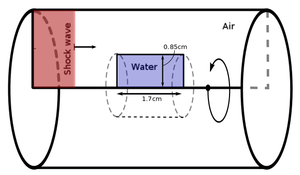

Shock wave propagation through interfaces applied to Traumatic Brain Injury.
Mauricio Del Razo Sarmina,
Randall J. LeVeque,
&
Collaborators at VA Hospital

University of Washington
Department of Applied Mathematics
Outline
- Motivation
- Experiments at VA Hospital
- Experimental setup - How to model it?
- Numerical setup - Numerical Methods
- Finite Volume methods - Results
- Advection equation
- Godunov scheme and REA algorithm
- System of equations?
- The wave propagation form
- The Riemann problem
Motivation
Collaborators at VA Hospital study mTBI in war veterans:
- Repetitive exposure to "mild" blast waves
- No brain damage diagnosed by standard methods
- Significant dementing and neurodegenerative disorders emerge
Repetitive exposure to shocks in the head set in motion pathogenic processes that later emerge
as neurodegenerative disorders YEARS LATER!
Motivation
We can help with computational experiments!
Computational model of shock waves propagating through interfaces
- Air to skull and brain.
- Interfaces in experimental setup
Bring insight into possible damaging mechanisms!
Mild traumatuc brain injury (mTBI) is also relevant in
- Blast waves (civilians)
- Car/bike accidents
- Football players
- Boxing
Experimentalists at VA Hospital:
What happens when the shockwave hits?
- Changes in blood-brain barrier diffusion.
- Damage to astrocytes cells.
- Brain cells damage.
- Combination of these.
We are trying to find out...
Experimental setup done with endothelial cells, since the blood-brain barrier is composed by them.
Experimental setup
They have a shock-tube!
Sample with enothelial cells is introduced into the shock-tube.
Experimental setup
Cartoon of cylindrical cross-section of shock tube:

- We can measure shock profile in air, but how does it look before hitting the cells?
- Reflections important?
- Other effects? Maybe cavitation?
How to model it?
We need
- Acoustic pressure propagation
- Shock formation (non-linear)
- Heat; it could be relevant for cell damage
- Interfaces
3D Axisymmetric Compressible euler equations
\[ \begin{aligned} \frac{\partial}{\partial t} \left[\begin{array}{c} \rho \\ \rho u_r \\ \rho u_z \\ E \end{array} \right] + \frac{\partial}{\partial r} \left[\begin{array}{c} \rho u_r \\ \rho u_r^2 + p \\ \rho u_r u_z \\ u_r(E+p) \end{array} \right] + \frac{\partial}{\partial z} \left[\begin{array}{c} \rho u_z \\ \rho u_r u_z \\ \rho u_z^2 + p \\ u_z(E+p) \end{array} \right] = \left[\begin{array}{c} -(\rho u_r)/r \\ -(\rho u_r^2)/r \\ -(\rho u_r u_z)/r \\ -u_r(E+p)/r \end{array} \right] \end{aligned} \]
Where are the Interfaces?
The Equation of State (EOS) relates pressure
with density and internal energy to close the system of eqs.
Stiffened gas equation of state (SGEOS) or Tamman EOS:
Different materials = different parameters for SGEOS
| Parameter | $\gamma$ | $P_\infty$ |
| Air | 1.4 | 0.0 |
| Water | 7.15 | $3\times 10^8$ |
Problem can be stiff at interfaces!
$\Rightarrow$ Interfaces not trivial to implement.
The Numerical Setup

- Revolved 2D model w/source terms = 3D Axisymmetric model.
- Air modeled in Eulerian coordinates.
- Water modeled in Lagrangian coordinates (moving w/fluid).
- Displacement of material in water small → Fixed grid
Numerical methods
The advection equation with velocity $c$:
\[ q(x,t)_t + c q(x,t)_x =0 \]\[ q(x,0) = q_0(x) \]
Has solution
$$q(x,t) = q_0(x-ct)$$Numerical methods
Godunov's finite volume method
The REA algorithm- Reconstruct piecewise polynomial function
- Evolve hyperbolic equation.
- Average function over grid cell.

Numerical methods
System of hyperbolic equations?
Like acoustics
\[ \begin{aligned} \frac{\partial}{\partial t} \left[\begin{array}{c} p \\ u \end{array} \right] + \underbrace{\left[\begin{array}{c c} 0 & K_0 \\ 1/\rho_0 & 0 \end{array} \right]}_{A} \frac{\partial}{\partial x} \left[\begin{array}{c} p \\ u \end{array} \right] = 0 \end{aligned} \]
As $A = R \Lambda R^{-1}$ with $\Lambda$ diagonal, we can rewrite
\[\begin{aligned} \frac{\partial}{\partial t}\vec{w} + \underbrace{\left[\begin{array}{c c} \lambda_1 & 0 \\ 0 & \lambda_2 \end{array} \right]}_{\Lambda} \frac{\partial}{\partial x} \vec{w} = 0 \hspace{10mm} \mathrm{with} \hspace{10mm} \vec{w} = R^{-1}\left[\begin{array}{c} p \\ u \end{array} \right] \end{aligned} \]
We can solve with the same algorithm.
Numerical methods
Wave formulation: think averaging as updating cell averages with waves coming from the cell edges.
$$ Q_{i}^{n+1} = Q_i^n - \frac{\Delta t}{\Delta x} \times \underbrace{\left[\sum_{p=1}^m(\lambda^p)^+ W_{i-1/2}^p \right. }_{\mathrm{Left Edge}} + \underbrace{\left. \sum_{p=1}^m(\lambda^p)^- W_{i+1/2}^p\right]}_{\mathrm{Right Edge}} $$
On each cell interface, $i-\frac{1}{2}$ and $i+\frac{1}{2}$, we need
- How fast the wave is moving ($\lambda$'s)
- How much of it is moving ($W$'s)
- How we do it?
Numerical methods
The Riemman problem
- Conservation laws (hyperbolic PDEs)
- Constant data with a single discontinuity
- Solve a Riemann problem in each grid edge
- Outputs $\lambda's$ and $W's$
- Works exactly even for some nonlinear systems like Euler.
- There are also approximations.
- Has complicated structure like Rarefactions, CD and shocks
 Acoustics Riemann problem
Acoustics Riemann problem
 Riemann diagram for Euler eqs.
Riemann diagram for Euler eqs.
Where were we?
3D Axisymmetric Compressible euler equations
\[ \begin{aligned} \frac{\partial}{\partial t} \left[\begin{array}{c} \rho \\ \rho u_r \\ \rho u_z \\ E \end{array} \right] + \frac{\partial}{\partial r} \left[\begin{array}{c} \rho u_r \\ \rho u_r^2 + p \\ \rho u_r u_z \\ u_r(E+p) \end{array} \right] + \frac{\partial}{\partial z} \left[\begin{array}{c} \rho u_z \\ \rho u_r u_z \\ \rho u_z^2 + p \\ u_z(E+p) \end{array} \right] = \left[\begin{array}{c} -(\rho u_r)/r \\ -(\rho u_r^2)/r \\ -(\rho u_r u_z)/r \\ -u_r(E+p)/r \end{array} \right] \end{aligned} \]
More numerical methods
- High resolution FVM: - Godunov method (+ limiters)
- Riemann solvers: - HLLC approximate solver
- Two or three Dimensions: - Dimensional splitting
- Source terms - Fractional step method with TR-BDF2
- Stiff Interfaces - Eulerian/Lagrangian coupling on fixed grid
- Exact Riemann solver for Tamman EOS
Fluid shock wave/interface problems: some results
1D Air-Plastic-Water Interface
- Pressure amplitude increases when crossing interface.
- As Plastic interface gets thinner, it becomes negligible.
- Plastic-water could play role of skull-brain.
Fluid shock wave/interface problems: some results
3D Axisymmetric Air-Water Interface Pressure Contours
Fluid shock wave/interface problems: some results
1D vs 3D Comparison
One dimensional simulation:

3D Simulation $\Rightarrow$
Vapour pressure at room Temperature:
2 493 Pa
Fluid shock wave/interface problems: some results
3D Axisymmetric Air-Water Interface
Major insights:
- Thin plastic negligible (1D)
- Pressure increases when crossing interface
- Geometry and reflections are very relevant
- Cavitation possible as new mechanism of injury